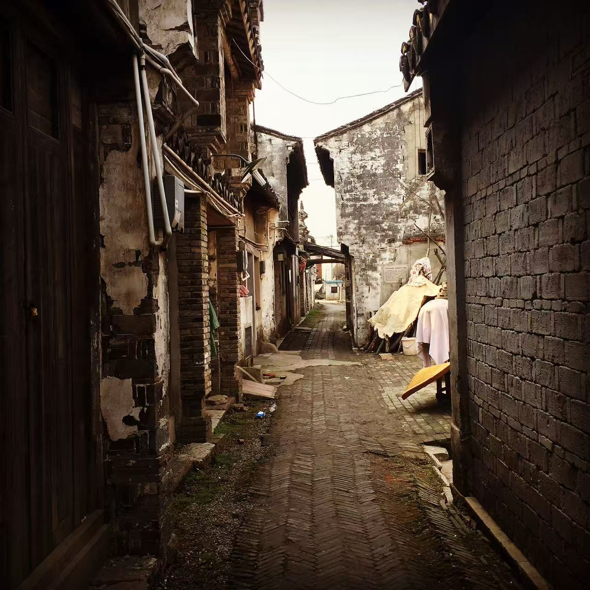
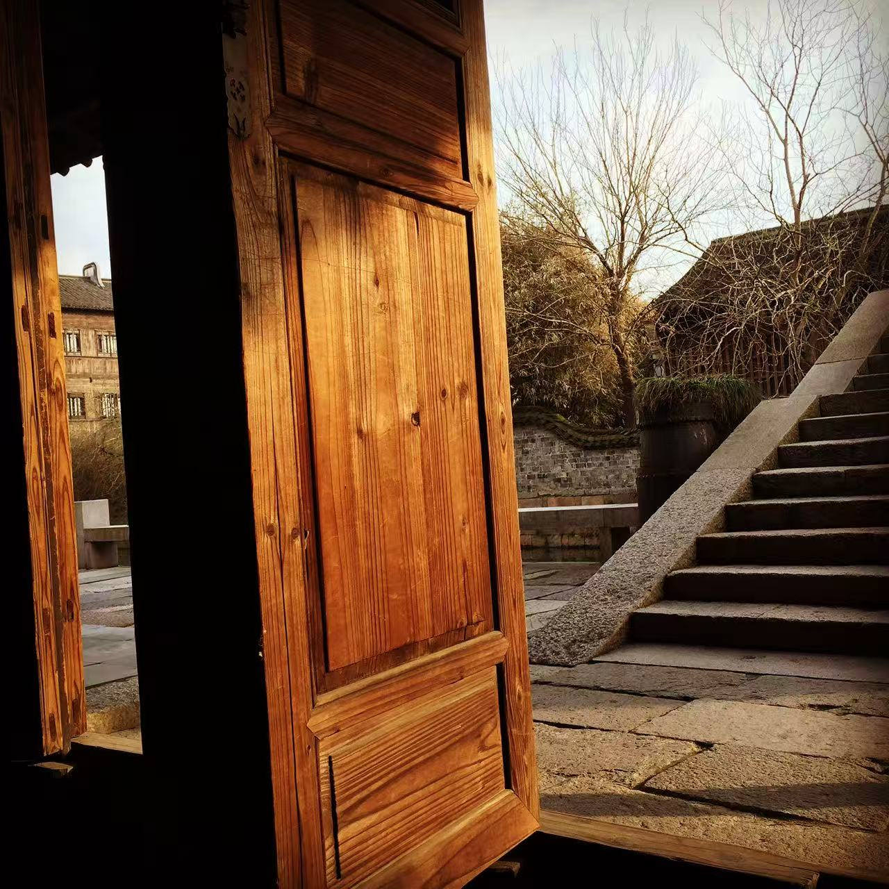
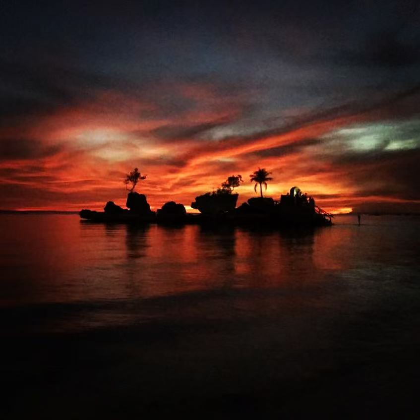
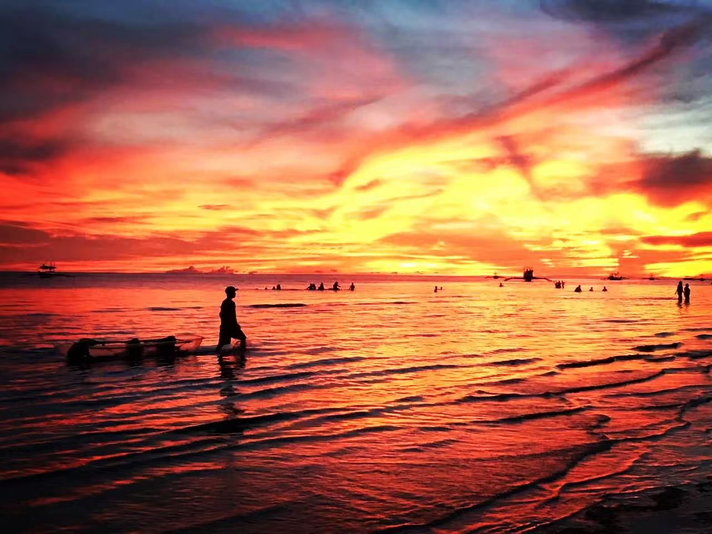
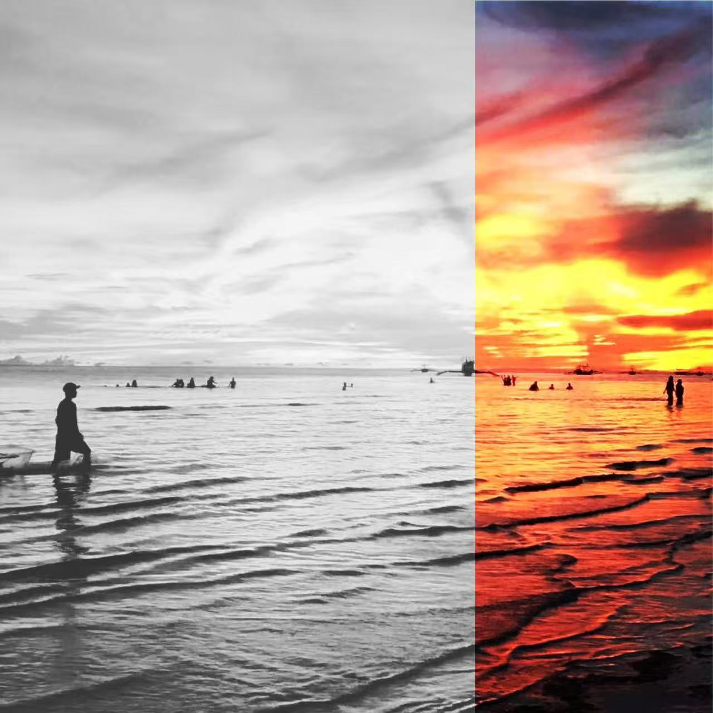
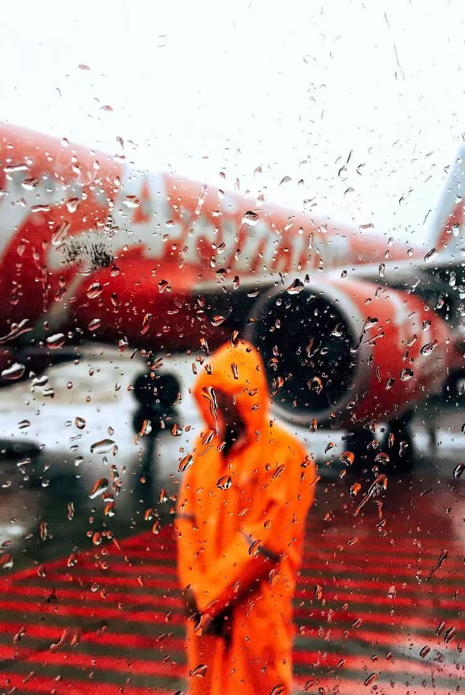
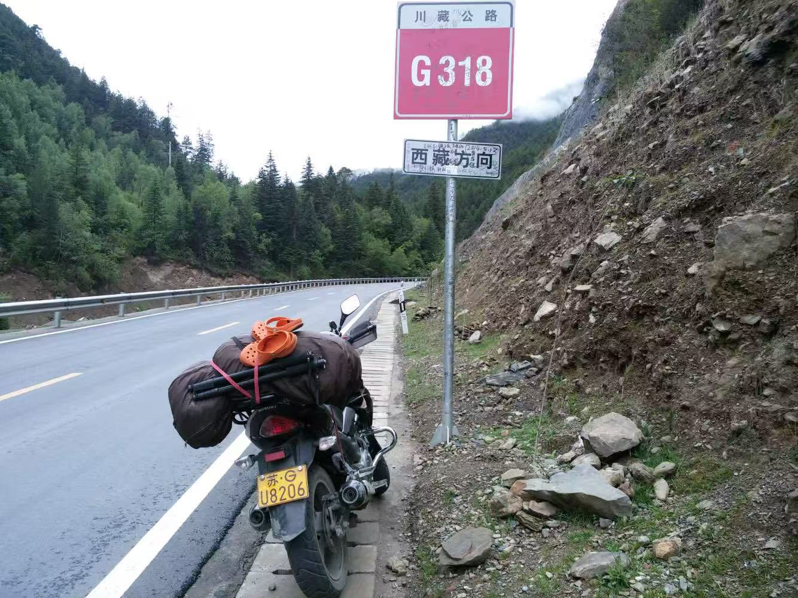
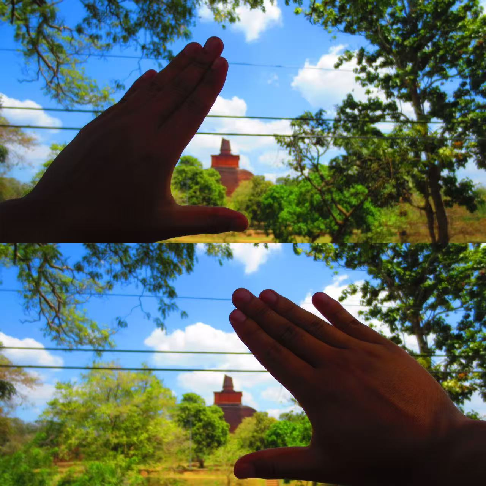

01 / 15
城市脉搏
夜幕下的城市建筑，灯光勾勒出都市的轮廓，仿佛能感受到城市的心跳与呼吸。
Photography Portfolio
夜静春山空
01 / 15
夜幕下的城市建筑，灯光勾勒出都市的轮廓，仿佛能感受到城市的心跳与呼吸。

02 / 15
建筑的几何线条在光影中交错，黑白之间展现纯粹的形式美学。

03 / 15
温暖的灯光洒落在空间中，营造出宁静而舒适的氛围。

04 / 15
街灯在湿润的地面上投下倒影，夜色中的街道别有一番韵味。

05 / 15
霓虹灯的光芒在夜色中闪烁，城市的繁华与孤独在此交织。

06 / 15
建筑内部的结构与光影相互映衬，展现出空间的力量与美感。

07 / 15
精心设计的灯光照亮建筑的细节，每一处都彰显着设计师的匠心。

08 / 15
空间的线条与结构形成独特的韵律，引导视线在其中游走。

09 / 15
光与影在室内交错重叠，创造出层次丰富的视觉效果。
10 / 15
从高处俯瞰都市夜景，万家灯火如繁星点点，璀璨而宁静。

11 / 15
温暖的灯光营造出舒适的氛围，让人感受到家的温馨与安宁。

12 / 15
水边的城市夜景，灯光在水面上形成倒影，如梦似幻。

13 / 15
静谧的空间中，只有光线在静静流淌，时间仿佛在此停滞。

14 / 15
繁华的都市在夜色中绽放光彩，每一盏灯都诉说着一个故事。

15 / 15
光与影在空间中翩翩起舞，演绎着一场无声的芭蕾。